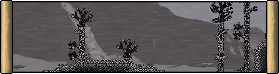
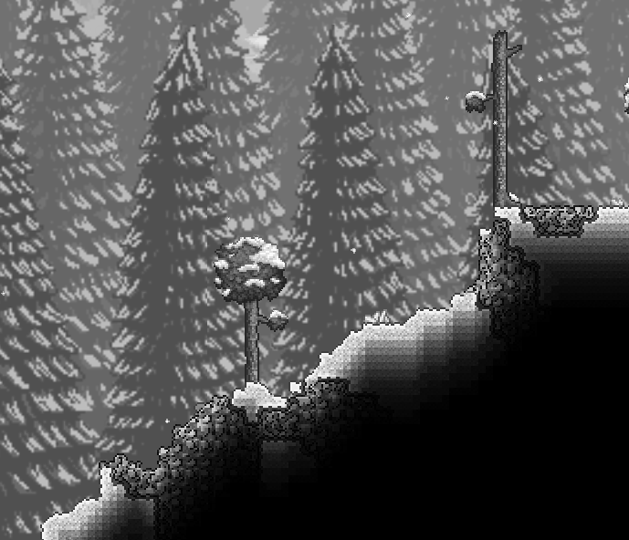
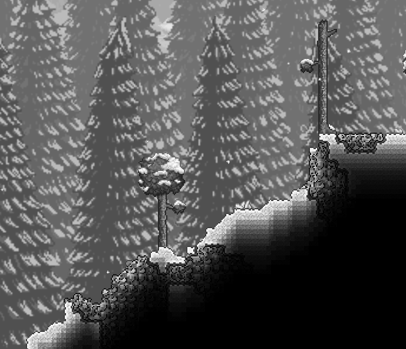

Defiled Wastelands
"The creatures you find in the Wastelands are merely the immune system to a whole bigger beast... nobody belongs there."
The Defiled Wastelands is one of the two new world-evil biomes added by Terraria Origins. The Defiled adopts a harsher, greyscaled appearance compared to the other biomes to show how anything affected by it is removed of any thought or will. The Defiled behaves differently to the other evils in many regards and has a unique path during playthroughs. Navigating through the wastelands can be extremely difficult as massive [link Defiled Stone] spikes are littered all throughout blocking the path.
Contents
See [link Defiled Caverns] for the content found during Hardmode in and under the [link Cavern | | https://terraria.wiki.gg/wiki/Cavern] layer.
{biomecontent { header:'NPCs' items:[ { items:[ ['Pre-Hardmode:', '$default', 'https://terraria.wiki.gg/wiki/Pre-Hardmode'] ['Ancient Defiled Cyclops', '$fromStats'] ['Chunky Slime', '$fromStats'] ['Defiled Cyclops', '$fromStats'] ['Defiled Digger', '$fromStats'] ['Defiled Ekko', '$fromStats'] ['Defiled Mite', '$fromStats'] ['Defiled Phantom', '$fromStats'] ['Defiled Krusher', '$fromStats'] ['Defiled Wisp', '$fromStats'] ['Shattered Goldfish', '$fromStats'] ['Defiled Amalgamation', '$fromStats', '$default', '(boss)'] ['Defiled Swarmer', '$fromStats', '$default', '(summoned by boss)'] ] } { items:[ ['Hardmode:', '$default', 'https://terraria.wiki.gg/wiki/Hardmode'] ['Defiled Asphyxiator', '$fromStats'] ['Defiled Mimic', '$fromStats'] ['Defiled Squid', '$fromStats'] ['Defiled Tripod', '$fromStats'] ['Defiled Watcher', '$fromStats'] ['Profaned Bident', '$fromStats'] ] } { header:['Underground Defiled Desert:', '$default', 'https://terraria.wiki.gg/wiki/Underground_Desert'] items:[ ['Shattered Ghoul', '$fromStats'] ] } { header:['Defiled Ice biome:', '$default', 'https://terraria.wiki.gg/wiki/Ice_biome'] items:[ ['Defiled Pigron', '$fromStats', 'https://terraria.wiki.gg/wiki/Pigron'] ] } ] } { header:'Unique Drops' items:[ { header:'From [link Defiled Ghoul], [link Defiled Squid] and [link Defiled Tripod]:' class:'miniheader inlineblock' items:[ ['Black Bile', '$fromStats'] ] } { header:'From [link Defiled Ekko] (in Hardmode) and [link Profaned Bident]:' class:'miniheader inlineblock' items:[ ['Meat Grinder', '$default', 'https://terraria.wiki.gg/wiki/Meat_Grinder'] ] } { header:'From [link Defiled Tripod]:' class:'miniheader inlineblock' items:[ ['Tripod Nip', '$fromStats'] ['Vitamins', '$default', 'https://terraria.wiki.gg/wiki/Vitamins'] ] } { header:'From [link Defiled Pigron | | https://terraria.wiki.gg/wiki/Pigron]:' class:'miniheader inlineblock' items:[ ['Bacon', '$default', 'https://terraria.wiki.gg/wiki/Bacon'] ['Ham Bat', '$default', 'https://terraria.wiki.gg/wiki/Ham_Bat'] ['Pigron Kite', '$default', 'https://terraria.wiki.gg/wiki/Kites#Pigron_Kite', '(on Windy Days)'] ['Pigron Minecart', '$default', 'https://terraria.wiki.gg/wiki/Minecarts#Pigron_Minecart'] ] } { header:'From [link Defiled Mimic]:' class:'miniheader inlineblock' items:[ ['Communion', '$fromStats'] ['Incision', '$fromStats'] ['Ziptie', '$fromStats'] ['Ravel', '$fromStats'] ['Chunky Hook', '$fromStats'] ['Greater Healing Potion', '$default', 'https://terraria.wiki.gg/wiki/Greater_Healing_Potion'] ['Greater Mana Potion', '$default', 'https://terraria.wiki.gg/wiki/Greater_Mana_Potion'] ] } { header:'From [link Profaned Bident]:' class:'miniheader inlineblock' items:[ ['Nazar', '$default', 'https://terraria.wiki.gg/wiki/Nazar'] ] } { header:'From [link Ancient Defiled Cyclops], [link Defiled Cyclops], [link Defiled Digger], [link Defiled Ekko], [link Defiled Phantom], [link Defiled Krusher], [link Defiled Squid] and [link Defiled Tripod]:' class:'miniheader inlineblock' items:[ ['Strange String', '$fromStats'] ] } { header:'From [link Ancient Defiled Cyclops], [link Defiled Cyclops], [link Defiled Digger], [link Defiled Phantom] and [link Defiled Krusher]:' class:'miniheader inlineblock' items:[ ['Ancient Defiled Helmet', '§ModImage§/Items/Armor/Defiled/Defiled2_Helmet.png', 'Ancient_Defiled_Armor.html'] ['Ancient Defiled Breastplate', '§ModImage§/Items/Armor/Defiled/Defiled2_Breastplate.png', 'Ancient_Defiled_Armor.html'] ['Ancient Defiled Greaves', '§ModImage§/Items/Armor/Defiled/Defiled2_Greaves.png', 'Ancient_Defiled_Armor.html'] ] } { header:'From [link Ancient Defiled Cyclops]:' class:'miniheader inlineblock' items:[ ['Ancient Kruncher', '$fromStats'] ] } { header:'From [link Chunky Slime]:' class:'miniheader inlineblock' items:[ ['Gel', '$default', 'https://terraria.wiki.gg/wiki/Gel'] ] } { header:'From [link Defiled Cyclops]:' class:'miniheader inlineblock' items:[ ['Bone Latcher', '$fromStats'] ] } { header:'From [link Defiled Phantom]:' class:'miniheader inlineblock' items:[ ['Krunch Mix', '$fromStats'] ] } { header:'From [link Defiled Krusher]:' class:'miniheader inlineblock' items:[ ['Bombardment', '$fromStats'] ] } { header:'From [link Defiled Wisp]:' class:'miniheader inlineblock' items:[ ['Defiled Spirit', '$fromStats'] ] } { header:'From any [link enemy | | Enemies.html]:' class:'miniheader inlineblock' items:[ ['Defiled Key', '$fromStats', 'Biome_Keys.html', '(from any enemy, 1/2500 chance)'] ['Soul of Night', '$default', 'https://terraria.wiki.gg/wiki/Soul_of_Night', '(1/5, 9/25 chance on Expert)'] ] } { header:'From [link Defiled Amalgamation]:' class:miniheader, items:[ ['Lost Ore', '$fromStats'] ['Undead Chunk', '$fromStats'] ['Low Signal', '$fromStats'] ['Return To Sender', '$fromStats'] ['Defiled Amalgamation Mask', '$fromStats'] ['Defiled Amalgamation Trophy', '$fromStats'] ['Treasure Bag', '§ModImage§/Items/Other/LootBags/Defiled_Amalgamation_Bag.png', 'Treasure_Bag.html', 'in Expert Mode'] ['Refactoring Pieces', '$fromStats', '$default', '(from treasure bag)'] ['Defiled Amalgamation Relic', '§ModImage§/Tiles/BossDrops/Defiled_Amalgamation_Relic_Item.png', 'in Master Mode'] ['Mysterious Spray', '$fromStats', '$default', 'in Master Mode'] ['Blockus Tube', '$fromStats', '$default', 'in Master Mode'] ] } { header:'From [link vegetation | | https://terraria.wiki.gg/wiki/Plants]:' class:'miniheader' items:[ ['Wilting Rose', '§ModImage§/Tiles/Defiled/Wilting_Rose_Item.png'] ] } { header:'From terrain:' class:'miniheader' items:[ ['Defiled Stone', '§ModImage§/Tiles/Defiled/Defiled_Stone_Item.png'] ['Defiled Sand', '§ModImage§/Tiles/Defiled/Defiled_Sand_Item.png', '$default', '(Underground Defiled Desert)'] ['Hardened Defiled Sand', '§ModImage§/Tiles/Defiled/Hardened_Defiled_Sand_Item.png', '$default', '(Underground Defiled Desert)'] ['Defiled Sandstone', '§ModImage§/Tiles/Defiled/Defiled_Sandstone_Item.png', '$default', '(Underground Defiled Desert)'] ['Gray Ice Block', '§ModImage§/Tiles/Defiled/Defiled_Ice_Item.png', '$default', '(Defiled Ice biome)'] { items:[ ['Defiled Fissure:', '$default'] ['The Kruncher', '$fromStats'] + ['Musket Ball', '$default', 'https://terraria.wiki.gg/wiki/Musket_Ball'] ['Dim Starlight', '$fromStats'] ['Infusion', '$fromStats'] ['Krakram', '$fromStats'] ['Suspicious Looking Pebble', '$fromStats'] ] } ] } { header:'From [link fishing | | https://terraria.wiki.gg/wiki/Fishing]:' class:'miniheader' items:[ ['Bilemouth', '$fromStats'] ['Manasynk', '$fromStats'] ['Knee Slapper', '$fromStats', '$default', '(Hardmode)'] ['Chunky Crate', '$fromStats', '$default', '(Pre-Hardmode only)'] ['Bilious Crate', '$fromStats', '$default', '(Hardmode only)'] ] } { header:'From [link Angler Quests | | https://terraria.wiki.gg/wiki/Angler#Quest_list]:' class:'miniheader' items:[ ['Prikish', '$fromStats'] ] } ] } { header:'Music' items:[ ['Music Box (Defiled Caverns)', '§ModImage§/Tiles/MusicBoxes/Music_Box_DC_Item.png', 'Music_Boxes.html'] ] } biomecontent}Spread
The spread of the Defiled Wastelands behaves very differently from other evils. It spreads quicker than its alternatives in pre-Hardmode, but its spread does not speed up any faster after the Wall of Flesh has been defeated. Additionally, its spread is unaffected by the defeat of [link Plantera | | https://terraria.wiki.gg/wiki/Plantera]. The Defiled also reclaims purified tiles rapidly in [link Hardmode | | https://terraria.wiki.gg/wiki/Hardmode] until the [link Defiled Heart] has been smashed preventing spread altogether. All Defiled Hearts in the world must be destroyed in order to halt the spread.
Defiled Desert and Snow
Unlike the other evils, the Defiled always can be present in Deserts and Snow Biomes and even spread freely in them. Not much changes with a Defiled Desert and the wastelands as [link Defiled Trees | | Defiled_Tree.html], spikes, and other foliage can still spawn on the [link Defiled Sand].
 

Notes
- It is worth noting that spikes in the Defiled Wastelands are generated with the world and cannot grow on clentaminated land. - The [link Defiled Amalgamation] will only spawn when the player is standing on the surface of the world. - The Defiled can be manually spread by using [link Defiled Seeds | | Defiled_Seed.html], [link Defiled Powder], [link White Water], or the Clentaminator with [link White Solution], obtainable from the Steampunker during a Blood Moon in Crimson worlds. - All Defiled enemies besides the Defiled Amalgamation cannot regenerate health below 11 health due to the nature at which they heal.
Tips
- When navigating the Defiled Wastelands bring a lot of bombs and torches as it gets really dark at night in the wastelands and bombs for blowing a hole through spikes in the way. - Defiled enemies have an exponential regeneration rate meaning that the lower health they have the faster they regenerate. This rate can be expressed by: Life Gain per second = 60 § (Current life/10).
Trivia
- The Defiled was originally planned to have something to do with corrupted code, but for the namesake and consistency of the mod, it was later changed to better fit the feel of Terraria.
- When the Defiled Wastelands is in the world, the indicator during world generation will be white and green and the other will be black to resemble the only two prominent colors in the Defiled.

- The Defiled Caverns represents some kind of circulatory system to hint at what the Defiled might actually be.
- If the Origins Music mod is not enabled the Corruption theme will instead play whenever the player enters the Wastelands.
- The "Shattered Reform" theme will play if the [link Mimic Armor] route is chosen when entering the Defiled Wastelands. The song is an heavy alteration of the Defiled melody.
Lore
The Defiled
The Defiled Wastelands was an entity unleashed when the [link Dusk] lost control of the dark forces of Terraria causing an imbalance. Ever since its freedom, it has taken form onto the landscape of the Terraria world and used it as a way to grow. The Defiled has had enough time to have a sizeable hold on the landscape and even take control of the life present on Terraria. The Defiled is not a place, it is a living being, and it is intelligent too. The Defiled creatures the Terrarian faces are merely its immune system and work force. The Defiled being creates these machinations using the nervous system of the original host for control and chunks made of Defiled matter to construct them from the ground up. These machinations are held together and move around with the use of Defiled spirits, which act as a force and glue that binds it all together.